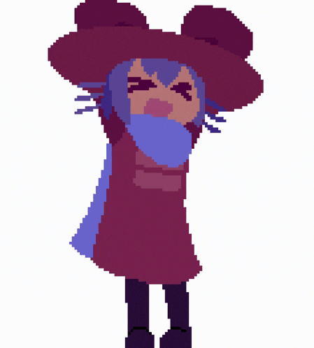

Po pořádné bitce s rebely jsi nakonec pana Ráčka zachránil.
Následně přijela záchranka a policie, kteří si rebely a Ráčka převzali.
MISSION ACCOMPLISHED
Hledá se Ráček!
Credits:
Martin Bucňák
Hlavní programátor a vedoucí
Ondřej Kocich
Pravá ruka hlavního programátora
Jakub Martínek
Podprogramátor 1. role, grafik
Tereza Dufková
Podprogramátorka 2. role, grafička
Jan Gaťařík
Asistent a sběratel informací
RNDr. Jaroslav Ráček, Ph.D.
Za to, že nám toto všechno povolil
A VY!!!
Za hraní naší hry!
Děkujeme Vám mockrát!
